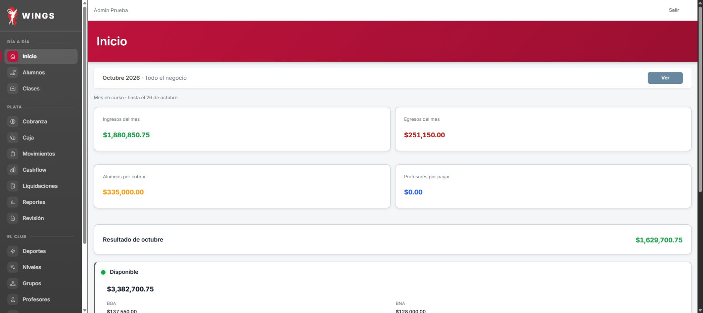
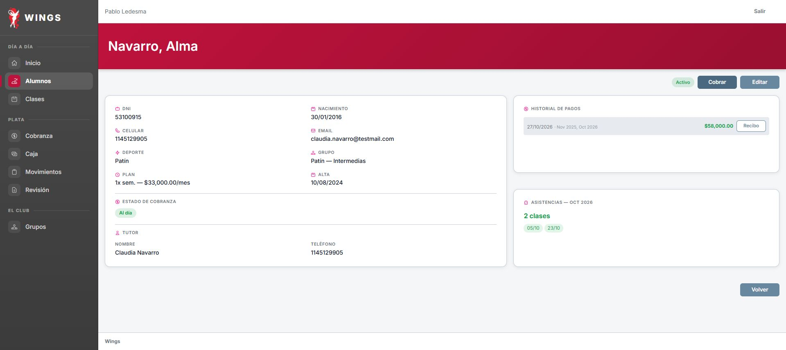
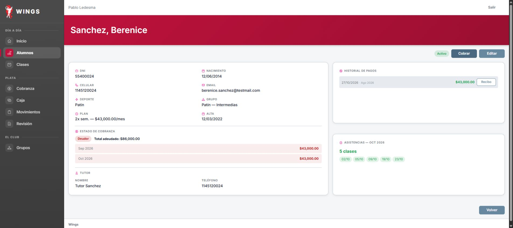
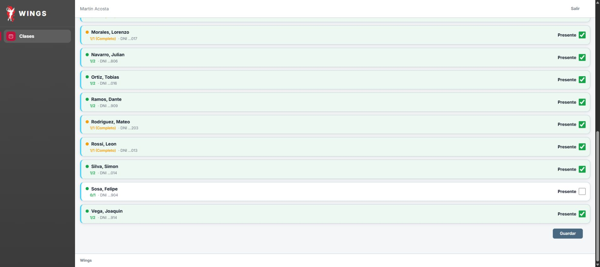
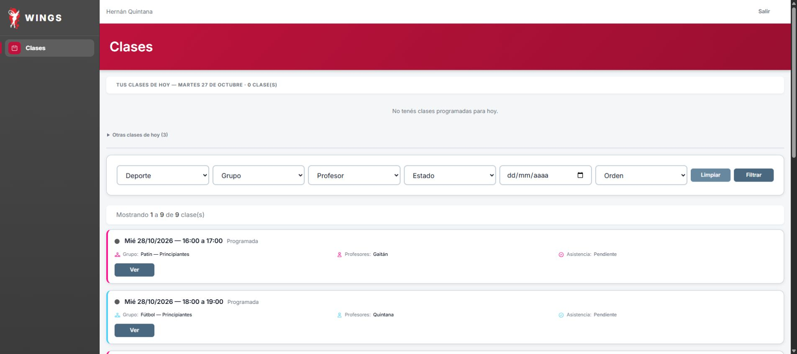
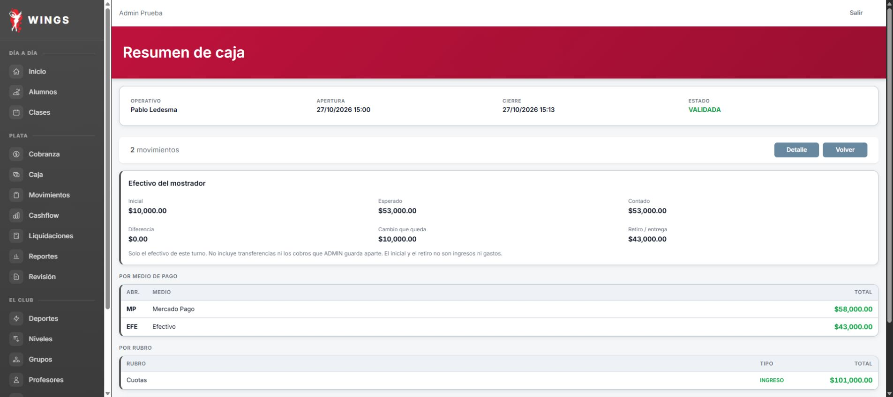
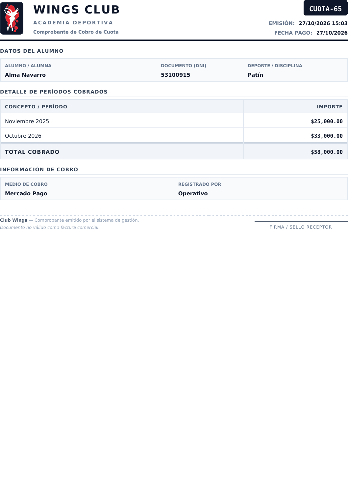

26/10/2026 · Codex CyE · test / wingstest · 13 casos: 7 Sí, 5 Parcial y 1 No.
Informe día 17 · Informe día 18 · Guion original
Recorrido entregado, pendiente de revisión independiente. Julieta sigue inactiva: no se cobró $143.000. La lista de Martín terminó con 14 presentes, pero hubo un envío vacío accidental anterior del ejecutor. No se afirma aprobación integral.
Esperado: «corta» no la acepta: pide al menos 12 caracteres. Con la buena guarda. Rocío entra con **Wings-Rocio-2026** y ve el menú de la operativa (USU-005).
Observado: Controlador como ADMIN: rechaza corta con mensaje en inglés de mínimo 12; guarda clave válida. Ingreso real como Rocío y menú operativo comprobados. Cambio por vía técnica solicitado por Carlos; no se acredita envío de clave por formulario.
Esperado: Antes de confirmar, total $56.000. Quedan **octubre $28.000**. Santino pasa de Deudor a **Moroso** (COB-006).
Observado: Total 56000 antes de confirmar. Pago registrado; Santino Moroso con octubre28000.
Esperado: **Botiquín** aparece en su lista de gastos, creado por el dueño el domingo, y se guarda (CAT-007).
Observado: Botiquín disponible como Rocío, egreso6500 con Gasas y alcohol. Resumen caja16: egresos10300, ingresos56000, neto45700.
Esperado: Queda activo. En Rubros → Sueldos aparece «Fútbol-Martín Acosta» (PRO-001).
Observado: Martín Acosta activo, Fútbol30%; subrubro Fútbol-Martín Acosta comprobado. Campos obligatorios ausentes del guion completados con datos ficticios: DNI30600117, nacimiento1988-05-17, Calle de Prueba170, Avellaneda, teléfono1155500017.
Esperado: Queda activo con rol Profesor. Martín entra y ve solo Clases (USU-003).
Observado: Usuario activo y vinculado creado por controlador como ADMIN, a pedido de Carlos por vía técnica. Ingreso web como Martín comprobado: menú solo Clases. No se acredita alta por formulario.
Esperado: **No pide motivo:** la clase nunca tuvo lista, así que es una primera carga. Guarda. «Sin asistencia» baja.
Observado: Clase76 guardada por Hernán: TomasGimenez y LucasGomez presentes, otros13 ausentes; recarga conserva2. No pidió motivo de corrección histórica, pero ambos mostraron exceder plan y la opción predeterminada EXTRA, que se conservó.
Esperado: Vuelve con su deuda tal cual, sin una cuota de octubre nueva. Con el cobro: recibo de cinco meses y **Al día** (ALU-018).
Observado: Dos intentos desde cero de Reactivar. Chrome abre confirmación nativa pero accept falla por Emulation.setFocusEmulationEnabled; primera recarga conservó Inactivo y143000. No se hace por consola, no se cobra. Se conserva la diferencia prevista por guion.
Esperado: «Hay un turno abierto. Cerralo antes de abrir otro.» Muestra el turno de Pablo. No puede cobrar (CAJ-009).
Observado: Inicio identifica turno de Pablo. Abrir lleva al aviso Hay un turno abierto de Pablo Ledesma. Debe cerrarse antes de abrir el siguiente. Al intentar Cobrar a Alma no habilita operación propia sin caja.
Esperado: Total $58.000 antes de confirmar. Recibo con sus dos cuotas. Pasa a **Al día**.
Observado: Total58000 antes de confirmar, MP; ficha Alma Al día, pago27/10 por Nov2025+Oct2026. PDF CUOTA65 descargado, texto y render comprobados:25000+33000=58000.
Esperado: Se imputa a la **más vieja, agosto**. Quedan septiembre y octubre, $86.000: sigue **Deudor**.
Observado: Agosto43000 cobrado; ficha muestra historial Ago2026 y pendientes Sep/Oct43000cadauno, Deudor86000. Dos capturas anteriores de pestaña equivocada se excluyen; recaptura posterior acreditada.
Esperado: Solo ofrece profesores de Fútbol. **No pide motivo**, porque la clase todavía no pasó. Queda Martín (CLA-009).
Observado: Opciones solo Acosta/Quintana y sin motivo; reasignación a Martín persistió. Error del ejecutor: el primer Guardar fue el de asistencias con todos0. Confirmado después por Martín: la tarjeta decía Sin presentes. Luego se ejecutó la lista prevista14presentes como Martín, sin otra reparación.
Esperado: La ve en sus clases. **14 presentes**. Guarda (ASI-001).
Observado: Martín ve la clase70 a su cargo y guarda14 presentes, Felipeausente, recarga conserva14. Al ingresar ya decía Sin presentes por el envío accidental del ejecutor en18.4: no se acredita primera carga limpia.
Esperado: Ya no figura a su cargo.
Observado: Hernán entra el27/10: Tus clases de hoy0 y No tenés clases programadas para hoy. La70 queda a cargo de Acosta.






